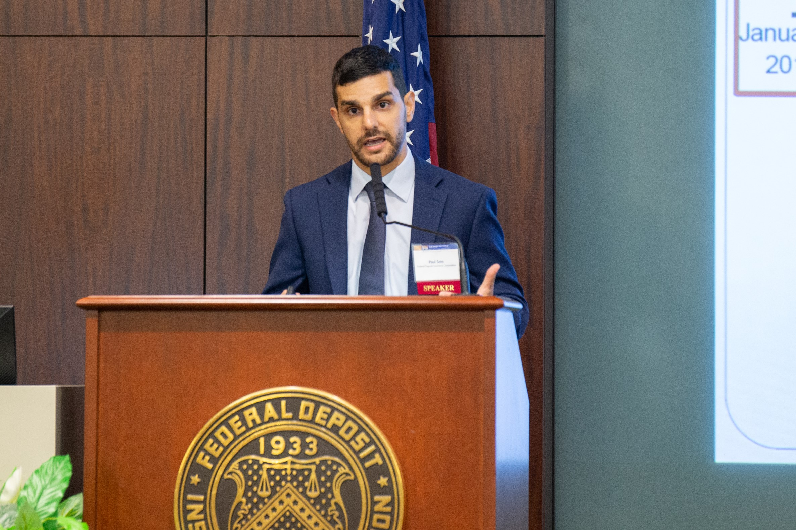

My name is Yubin Dai. I have been studying as a master's student at the College of Control Science and Engineering, Zhejiang University in China since 2023 , and I pursued my Bachelor's degree in Automation at Shandong University from 2019 to 2023.
My research focuses on Addressing the computation offloading problem for unmanned systems and other edge devices.